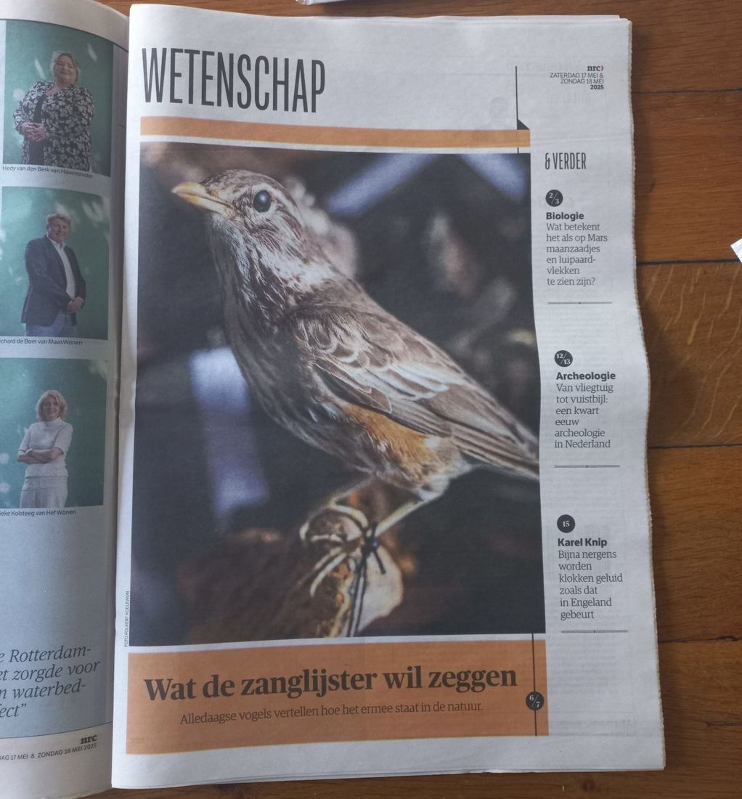

Koperwiek, geen zanglijster
17 mei 2025 · NRC
- Op de foto
- Koperwiek
- Het ging over
- Zanglijster

Wat de Zanglijster wil zeggen? Ik denk niet dat deze Zanglijster daar iets op zal zeggen. Op de foto staat namelijk een Koperwiek. Jammer @nrcnl, volgende keer ons even een berichtje sturen voordat je iets over vogels plaatst 😉